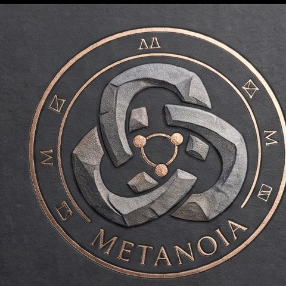
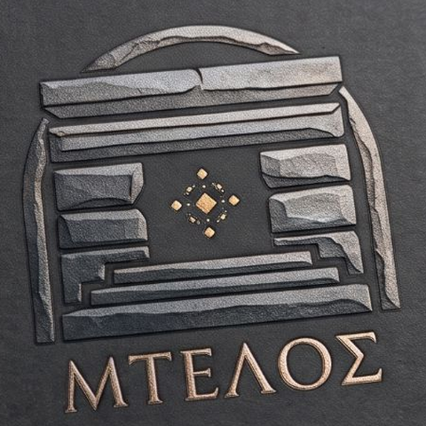
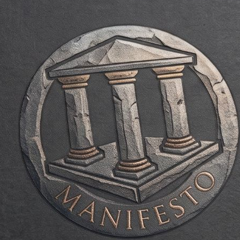
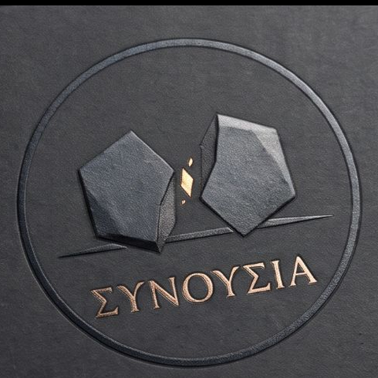

Metanoia
A map of connected undertakings, all asking one question: how far, how well rounded, how fully developed a way of life can we imagine, and what would it take to get there? Pick the door that fits you.
Why now? In a Stanford talk in June 2026, Sam Altman said the most interesting things he has seen come from putting enough of the right people together on one problem, that everything breaks as it grows, and that it holds with a clear goal, a clear plan and a clear way to decide. He does not know why it works. These doors are built on it. The weekly Συνουσία is where it starts.
The Doors

MtelosOpenA shared, constantly updated library of what works on the ground, gathered by institutions and by people themselves, reachable by anyone, in their own language. Start here if you hold knowledge or build knowledge systems.
The Secret ManifestoOpenCreating Radically Innovative Ecosystems: the people who know, the places, and the knowledge they stand on.- The VaultOpen23 deep dives into rethinking life. Bring a source, an idea, or a question we have missed.
- Wild HorseOpenAI's wild performance swings: open questions on why AI models do brilliant work, then suddenly don't. Share your experience.

ΣυνουσίαOpenThe Metanoia Weekly Commons. Scientists, CEOs and builders, meeting online every week. You don't come empty-handed.- The PioneersOpening soonBoots on the ground from summer 27: people actively researching a different way of life, living it together.
- w0rk~fl0wOpening soonFrom outcome to ground zero. Start from the outcome, not the to-do list, and find your next real step.